Real VMs. Real API.
Your own Mac cloud.
Firecracker, Cloud Hypervisor, QEMU/KVM, the FluxVM hypervisor and Apple's Virtualization.framework behind one REST API. Mac minis and Mac Studios included.

Firecracker, Cloud Hypervisor, QEMU/KVM, the FluxVM hypervisor and Apple's Virtualization.framework behind one REST API. Mac minis and Mac Studios included.
